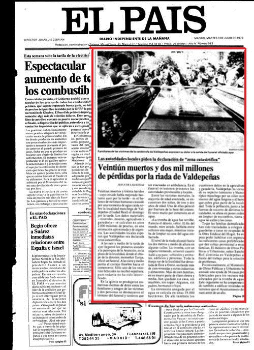

«Veintiuna personas muertas, treinta heridas leves y cerca de 2.000 millones de pesetas en daños materiales ha causado un fuerte aguacero de cuatro horas y media de duración, caído el domingo, día 1 de julio, sobre el pueblo manchego de Valdepeñas (Ciudad Real). "Era el diluvio, señor; como el fin del mundo. Algo espantoso. Ya ni tenemos palabras, ni lágrimas para explicarlo", dice y gime una mujer enfangada de barro, mientras saca a cubos el agua terrosa de su casa.»
Es lo que publica el periodico El Pais el dia 3 de julio de 1979.
El día 1 de Julio del 1979 Valdepeñas sufrió uno de sus episodios más dramáticos. Más de trescientas familias perdieron sus casas con todos sus enseres. Más de cien viviendas quedaron destruidas, así como varias industrias y almacenes. La mayor parte de la población afectada correspondia a la clase obrera, que habitaba los puntos extremos de la zona inundada, y el resto, a la clase media.
Se calcula que cayeron 150 litros de agua por metro cuadrado. La extensión cubierta por la tormenta abarca 15.000 hectáreas y los daños económicos en la agricultura se estiman en unos trescientos millones de pesetas. Pero no sólo fueron víctimas del agua las personas, los inmuebles o las viñas y otros cultivos, sino también la ganadería. Las estimaciones facilitadas a través del alcalde por la comisión de agricultura desplazada al pueblo para realizar un primer informe calculan que han muerto unas 2.900 cabezas de ganado lanar y unas cien de vacuno, lo que supone, aproximadamente, otros doscientos millones de pesetas.